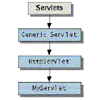

La abstración central en el API Servlet es el interface Servlet.
Todos los servlets implementan este interface directamente o
extendiendo una clase que lo implemente como HttpServlet.

- Tecleando la URL del servlet en un Navegador Web
- Llamar a un Servlet desde dentro de una página HTML
- Desde otro servlet (peticiones HTTP,accediendo métodos
públicos)
Init(): es donde comienza el servlet. Aquí
se colocá código que se
desea sea ejecutado sólo cuando carga el servlet.
- Obtener datos de configuración y entorno
- Crear conexiones a BD (¿?),.... generar hilos,...
Destroy(): cuando el servlet es desmontado
se invoca este metodo.
Es usado para hacer limpieza.
- Destruir conexiones a BD, destruir hilos
Service(): maneja las peticiones del cliente
(Get,Post,Put,Delete,...)
doGet() y doPost()
doHead(), doPut(), doDelete(), doOptions(), doTrace()
ServletContext: permite a un servlet
acceder a información sobre el entorno en que se están ejecutando.
ServletConfig: contiene métodos que permiten pasar al servlet información sobre sus parámetros de inicialización.
Cuando un servlet es invocado recibe dos objetos
ServletRequest (->HttpServletRequest),
encapsula la comunicación desde el cliente al servidor.
ServletResponse (->HttpServletResponse),
encapsula la comunicación de vuelta desde el servlet hacia el cliente.
|
import java.io.*; import javax.servlet.*; import javax.servlet.http.*; public class HolaMundo extends
HttpServlet
// Metodo a ejecutar en respuesta de una petición GET public void doGet (HttpServletRequest
request,
// Creamos los objetos para imprimir la salida,...
//Seleccionamos el tipo de contenido que va
a devolver el Servlet
//Enlazamos el objeto respuesta a nuestro objeto
de salida
//Empezamos a generar la pagina!!!!
out.println("<HTML><HEAD><TITLE>");
// CERRAMOS EL OBJETO DE SALIDA!! (recolector?)
|
| Se compila así
PATH_JAVA/javac nombre_archivo Si no está definido el class_path se puede usar
|
Se utiliza el método getWriter para devolver datos en formato
texto
al usuario.
El método getWriter devuelve un Writer
| response.getWrite |
Se utiliza el método getOutputStream para mandar datos
binarios al usuario.
El método devuelve un ServletOutputStream
| response.getOutputStream |
Dependiendo del tipo de salida hay que modificar
setContentType
- Si usaramos CGI esta tarea sería bastante complicada.
Con el método POST la complicación no sería tanta
pero si usaramos el método
GET sería elevada puesto que tendríamos que recoger los
valores códificados en la
URL (QUERY_STRING) e ir separando cada parámetro con su valor.
- Con los Servlet simplemente llamamos al método getParameter
de HttpServletRequest,
y suministramos el nombre del parámetro como un argumento.
| String request.getParametre(String) |
| String[ ] request.getParameterValues(String) |
|
Enumeration NombresParametros = request.getParameterNames(); while(NombresParametros.hasMoreElements()) { String NombreParametro = (String)NombresParametros.nextElement(); String[ ] ValoresParametro = request.getParameterValues(NombreParametro); ... } |
- En peticiones POST, PUT, y DELETE de HTTP si esperamos los datos en
formato "texto duro",
el método getReader devuelve un
BufferedReader
.
- Si esperamos datos binarios, el método getInputStream
devuelve un ServletInputStream.
Obtiene la dirección URI
PATH_URI
request.getRequestURI()
Obtiene el protocolo (HTTP 1.0, HTTP 1.1)
SERVER_PROTOCOL
request.getProtocol()
Devuelve un entero con el número de bytes enviados (método
POST)
CONTENT_LENGTH
request.getContentLength()
Obtiene (basic, digest, not specified)
AUTH_TYPE
request.getAuthType()
Obtiene el tipo MIME
CONTENT_TYPE
request.getContentType()
Obtiene la información de PATH del servlet (no es necesario)
PATH_INFO
request.getPathInfo()
PATH_TRANSLATED
request.getPathTranslated()
Obtenemos la linea con los parametros e formato URL.
No muy usado (request.getParameter)
QUERY_STRING
request.getQueryString()
Obtiene la dirección del IP cliente (notación pto)
REMOTE_ADDR
request.getRemoteAddr()
Obtiene el nombre del dominio del cliente
REMOTE_HOST
request.getRemoteHost()
Obtiene el usuario si se ha suministrado Authorization
REMOTE_USER
request.getRemoteUser()
Indica el método que se ha solicitado (GET,POST,HEAD,DELETE,TRACE,PUT,...)
REQUEST_METHOD
request.getMethod()
Obtiene el path "local" del servlet
SCRIPT_NAME
request.getServletPath()
Obtiene el nombre el servidor
SERVER_NAME
request.getServerName()
Devuelve un entero que representa el puerto del servidor por el que
ha conectado el cliente
SERVER_PORT
request.getServerPort()
- Usamos la clase ServletConfig para cargar valores de inicialización
son externos a nuestro Servlet
|
getInitParameter(String) |
|
getInitParameterNames() |
|
String timezone; public void init(ServletConfig config) {
|
- Usamos la clase ServletContext para obtener datos del contexto
del Servlet (de los Servlets de nuestro sistemas)
|
getServletContext() Devuelve el contexto de un servlet |
DOCUMENT_ROOT
getServletContext().getRealPath("/")
SERVER_SOFTWARE
getServletContext().getServerInfo()
Devuelve un valor con el servidor que se esta usando
|
public String getServletInfo() { return "Este es mi Servlet!!!!"; } |
Modificar atributos de Contexto
| setAttribute |
| getAttribute |
| getAttributeNames |
| removeAttribute |
Obtener un Servlet
| getServlet() |
| getServletNames() |
Generar un fichero log sobre un Servlet
| log() |
- Devolver un estado
| response.setStatus(int) |
- Devolver un código de error
| response.sendError(int)
response.sendError(404); response.sendError(int,String)
|
- Redireccionar automaticamente a una página
| response.sendRedirect // atajo Código 302 |
Mandar antes de PrintWriter
Ver códigos de errores HTTP
1.0 o HTTP 1.1
- Algunos ejemplos son:
Deshabilida la cache
response.setHeader("pragma", "no-cache");
Redirecciona (o refresca) la página en int (5) segundos
response.setHeader("Refresh", "5");
response.setHeader("Refresh", "5; URL=http://host/path")
Activar cookie (No se usa)
response.setHeader("Set-Cookie", ...)
response.setHeader("WWW-Authenticate", "BASIC
realm=\"executives\"")
response.setDateHeader
response.setIntHeader
response.setContentType("text/html");
response.setContentLength
response.addCookie
response.sendRedirect
Se generan cuando se mandan datos de formularios(GET,POST) son
opcionales excepto Content-Length cuando realizamos un POST
| request.getHeader(String)
Obtiene el valor de la cabecera de solicitud |
| Enumeration NombresCabecera = request.getHeaderNames();
Obtiene una relacion con los nombres de las cabeceras |
| while(NombresCabecera.hasMoreElements()) {
String NombreCabecera = (String)headerNames.nextElement(); out.println(NombreCabecera + " "); out.println(request.getHeader(NombreCabera +"\n")); } |
Ejecutar
ejemplo
Ver código JAVA
Información (texto) que el servidor web envia al navegador
y que este
se encarga de almacenar localmente para posteriormente poder volver
a ser leido
por el servidor web.
Imaginemos que un "sitio Web" almacena las páginas visitadas
por
cada usuario.Si esto se tuviera que hacer desde el punto de vista
del servidor sería demasiado "pesado" mientras que si la información
se guarda en el cliente podemos hacerlo de manera más eficiente.
Se utiliza para
- Identificar usuario
- Mantener preferencias (aspecto de la web,publicidad,...)
- Manejar una sesion
Conlleva problemas no de seguridad sino de privacidad.Es una buena
práctica usar otros métodos.
| Crear un objeto Cookie
new Cookie(name String,value String)
|
| Establecer el valor de una Cookie
coche.setValue()
|
| Enviar una Cookie
response.addCookie(coche);
Se debe hacer antes del "bind"
|
| Recibir una Cookie
Cookie coche = null;
|
| Obtener el valor de la cookie:
coche.getValue()
|
| Obtener el nombre de la cookie:
coche.getName()
|
- public void setComment(String)
Sirve para añadir un comentario a la cookie
coche.setComment("Comentario de la cookie");
- public void setDomain(String)
Establece el patrón de dominio a quien permitir el acceso a
la información
contenida en la cookie
- public void setMaxAge(int)
Establece el tiempo de caducidad de la cookie siendo la unidad de tiempo
los segundos.
-1 indica al terminal que borre la cookie
al cerrar
0 borra la cookie de inmediato.
- public void setPath(String)
Establece la ruta de acceso del directorio de los servlets que tienen
acceso a la cookie.
Por defecto es aquel que originó la cookie.
- public void setVersion(int)
Establece la versión de la cookie.
| import java.io.*;
import javax.servlet.*; import javax.servlet.http.*; public class CookieExample extends HttpServlet { public void doGet(HttpServletRequest
request, HttpServletResponse response)
// print out cookies Cookie[] cookies = request.getCookies();
// set a cookie String name = request.getParameter("cookieName");
|
El protocolo HTTP no maneja un estado de cada conexión realizada
por un
agente del usuario, es por ello que se deben establecer mecanismos
ajenos
al servidor de HTTP para llevar el control de la sesión.
- Esto se puede lograr con un almacenamiento persistente de una estructura
de datos
por cada cliente:
Cookies (privacidad)
Controles HTML ocultos (tedioso)
<INPUT TYPE="HIDDEN" NAME="session" VALUE="...">.
Memoria RAM compartida (complejo y costoso)
Archivo plano o con registros del sistema de archivos (confiabilidad)
Tabla en la base de datos utilizada
Registros de DNS dinámico
URI, parámetro por método GET ó POST
Se evita autenticar y autorizar cada petición,así como
la retransmisión constante de su
nombre de usuario y su contraseña,lo cual es potencialmente
peligroso.
Los identificadores de la sesión deben de ser únicos y
difíciles de adivinar, ya que puede existir
la posibilidad de que agentes externos quieran simular accesos válidos
y entrar de manera
fraudulenta al sistema. Es por ello que se debe de valer de algún
mecanismo que provea de
identificadores aleatorios y con un gran periodo en su repetición,
tales como generadores de cadenas
aleatorias (Tickets) MD5, DES, etc o la utilización del dispositivo
de entropía existente en algunos sistemas
operativos ("/dev/random" en Linux).
Con los Servlet esto se realiza de forma automática y no nos tenemos que preocupar por ello.
Todo este manejo de sesiones en Servlets se va a realizar sobre el API
HttpSession.
Este es un interface de alto nivel construido sobre las cookies y la
reescritura de URL.
No tiene que manipular explícitamente las cookies o la información
añadida a la URL, y se
les da automáticamente un lugar conveniente para almacenar los
datos asociados con cada sesión.
Los métodos han sido cambiados de la versión
2.1
| Crear una nueva sesion
HttpSession session = request.getSession(true);
|
| Obtiene una relación con de los atributos
de la sesión Enumeration getAttributeNames
|
| Fija un atributo
session.putAttribute"referringPage", request.getHeader("Referer")) Antes putValue |
| Obtiene un atributo (objeto)
(ShoppingCart)session.getAttribute("previousItems"); Antes getValue |
Otros métodos útiles del objeto HttpSession
| getId | identificador único de sesión |
| isNew | true si ya se han realizado sesiones
false si es nueva |
| getCreationTime | fecha de creación (Convertir) |
| getLastAccessedTime | fecha del último acceso |
| getMaxInactiveInterval | tiempo para que la sesion sea invalidada
negativo si nunca se invalida |
| invalidate | invalida manualmente la sesión |
| import java.io.*;
import java.util.*; import javax.servlet.*; import javax.servlet.http.*; public class SessionExample extends HttpServlet { public void doGet(HttpServletRequest
request, HttpServletResponse response)
HttpSession session = request.getSession(true); // Mostrar información de la sesión creada Date
created = new Date(session.getCreationTime());
// Fijar valores de la sesión String
dataName = request.getParameter("dataName");
// Mostramos
valor de los atributos de la sesión
|
- Ya hemos visto anteriormente la necesidad de las BD.
Ahora vamos haber como se utilizan de manera muy somera y superficial
Clases que debermos importar
| import java.io.*;
import java.text.*; import java.util.*; import javax.servlet.*; import javax.servlet.http.*; import java.sql.*; import javax.sql.*; |
Crear el objeto conexion
| Connection con=null; |
Crear el objeto sentecia
| Statement orden=null; |
Cargar el driver
| try{
Class.forName("org.postgresql.Driver") }catch(Exception e) {e.printStackTrace();
|
Conectar con BD
| try{
con=DriverManager.getConnection("jdbc:postgresql://localhost:5432/prueba","rsb",""); }catch(Exception e) {e.printStackTrace(); out.println("ERROR al conectar");}
|
Enlazar el objeto conexión con el objeto sentencia
| orden=con.createStatement(); |
Crear una tabla
| String ntabla="alumnos";
String ncol1="nombre"; String ncol2="DNI"; orden.executeUpdate("CREATE TABLE "+ntabla +"
|
Borrar una tabla
| orden.executeUpdate("DROP TABLE "+ntabla); |
Insertar valores en la tabla
| orden.executeUpdate("
INSERT INTO asig_doc (asignatura,prof_id,fech_curs) VALUES ('hmus1','9735','1/8/1999') "); |
Crear objeto resultado
| ResultSet res=null; |
Realizar un select simple y navegar por los resultados
| res=orden.executeQuery("SELECT password FROM
profesores WHERE prof_id='"+prof_id+"'");
while (res.next()){
|
Métodos para obtener los tipos getXXX
Destruir el objeto sentencia
| orden.close(); |
Destruir el objeto conexión (cerrarla)
| try{
con.close(); }catch(Exception e) {e.printStackTrace();
|
- En que método conectar con la BD?
-> En doGet(), doPost()
MAL (muy costoso por tmp)
-> En init() cuando arranca
MAL (costoso por mantener conexiones,...)
-Solución: Almacenes de conexiones (Pool Connection)
Velocidad
- Uso de threads
- Uso de almacenes (de threads, de conexiones a
BD)
- Inserción de xpm en las clases (¿?)
Portabilidad ;-)
- Uso de XML (ejemplo generar WML)
- Para acceso a recursos compartidos
- Sincronización
- Aumentar las prestaciones de velocidad
Para hacer que el servlet maneje sólo un cliente a la vez, tiene
que implementar el interface
SingleThreadModel además de extender la clase HttpServlet.
| public class ReceiptServlet extends HttpServlet
implements SingleThreadModel { ... } |
| ServletOutputStream out = res.getOutputStream();
out.print("/* XPM */\n"+ "static char * hello_xpm[] = {\n"+ "\"17 13 2 1\",\n"+ "\" \tc #000000\",\n"+ "\"X\tc #"+color+"\",\n"+ "\"XXXXX XXXXX\",\n"+ "\" XXXXX XXXXX \",\n"+ "\" XXXXX XXXXX \",\n"+ "\" XXXXX XXXXX \",\n"+ "\" XXXXXXXXX \",\n"+ "\" XXXXXXX \",\n"+ "\" XXXXX \",\n"+ "\" XXXXXXX \",\n"+ "\" XXXXXXXXX \",\n"+ "\" XXXXX XXXXX \",\n"+ "\" XXXXX XXXXX \",\n"+ "\" XXXXX XXXXX \",\n"+ "\"XXXXX XXXXX\"};\n"); out.close(); |
| import java.io.*;
import javax.servlet.*; import javax.servlet.http.*; public class ServletEjemplo extends HttpServlet { private String Param1=null;
public void init(ServletConfig config) throws ServletException {
public void destroy()
public void doPost (HttpServletRequest req, HttpServletResponse resp) throws ServletException, IOException { Param1=req.getParameter("Param1");
} // fin del método doPost() public void doGet (HttpServletRequest req, HttpServletResponse resp)
public void GenerarPaginaWML (HttpServletResponse resp) { resp.setContentType("text/vnd.wap.wml");
} // fin de GenerarPaginaWML () public String getServletInfo() {
|
Ricardo Santamaria (AUGCYL)
Abril 2002 GFDL 1.1